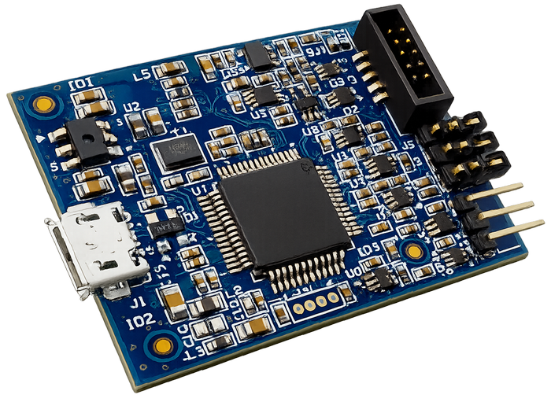
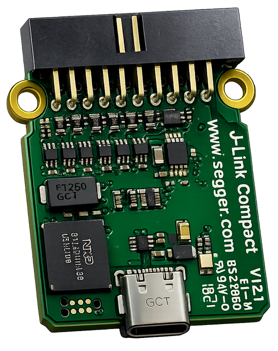
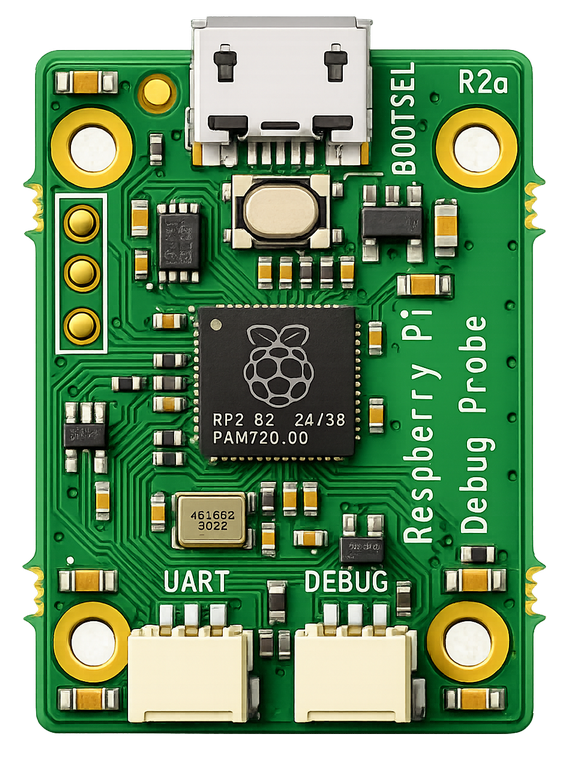

Universal CMSIS-DAP Support
Built as a general CMSIS-DAP driver, it can communicate with a wide range of debug probes that implement the standard protocol.
Universal CMSIS-DAP backend for lightweight debuggers · ≈28 KB footprint · Multi‑probe support
This driver is a general-purpose CMSIS-DAP driver that can work without vendor-specific drivers and supports MCU-LINK, J-Link in DAP mode, Pico Debug Probe, and virtually any DAP probe that follows the CMSIS-DAP standard.
$ cd --probe cmsis-dap --target RP2040 [ok] probe detected: CMSIS-DAP [ok] transport: SWD [ok] backend: generic compact driver [ok] compatible probes: - MCU-LINK - J-Link (DAP mode) - Pico Debug Probe - other standard CMSIS-DAP probes footprint: small deps: minimal usage: Compact Debugger
The goal of this driver is simple: provide a clean, reusable, general CMSIS-DAP backend that stays lightweight, portable, and practical for embedded debugging tools.
This CMSIS-DAP driver is a generic implementation for standard DAP probes. The compiled driver is typically about 28 KB, keeping the debugging stack extremely lightweight. It can be used without installing vendor-specific probe drivers, making it a convenient backend for tools that need broad hardware compatibility with a very small footprint.
Small, practical, and made for real embedded workflows.
Built as a general CMSIS-DAP driver, it can communicate with a wide range of debug probes that implement the standard protocol.
Use one backend for multiple probes instead of maintaining separate probe-specific integrations.
The implementation is intentionally compact, making it suitable for lightweight debugger projects and minimal toolchains.
Examples of debug probes that work directly with this generic CMSIS-DAP driver.

NXP CMSIS-DAP based debug probe commonly used with LPC and MCX development boards.

SEGGER J-Link devices can operate in CMSIS-DAP compatible mode and work with the same driver backend.

Raspberry Pi RP2040-based debug probe implementing the CMSIS-DAP protocol.
The driver is intentionally small and direct. In typical builds the footprint is roughly 28 KB, making it easy to embed inside compact debugging tools.
The implementation targets what a practical CMSIS-DAP backend needs, without unnecessary complexity.
A compact codebase is easier to read, integrate, adapt, and maintain inside custom debugger projects.
Especially suitable for terminal-based or lightweight GUI debuggers that want broad probe support without becoming heavy.
A simple and clean layering model keeps responsibilities clear across the whole debugging stack.
This layout keeps the responsibilities clear: the probe talks to the target MCU, the CMSIS-DAP driver provides a compact access layer, and Compact Debugger builds the user-facing debugging workflow on top.
Many debugging frameworks are powerful, but they can also be larger and more layered than necessary for compact tools.